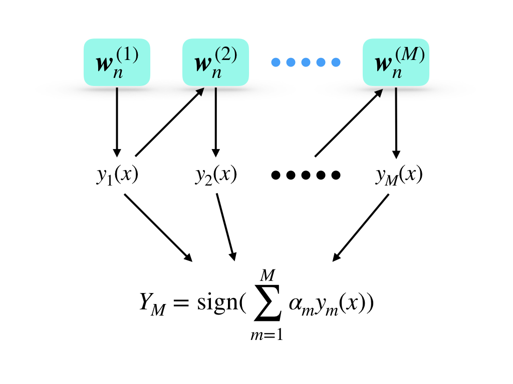
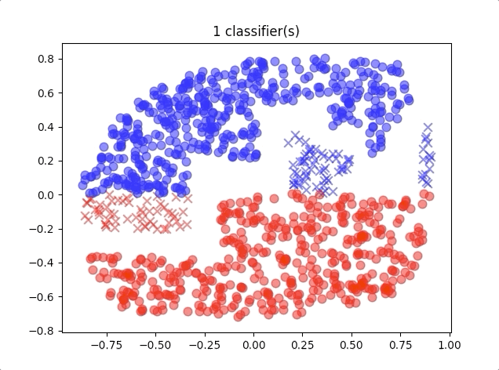
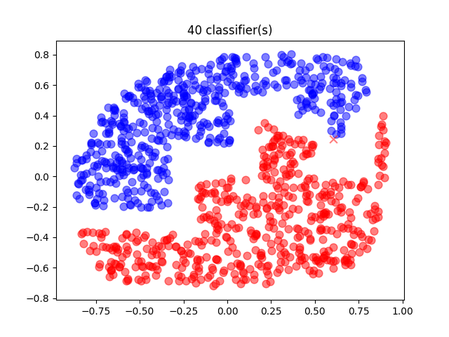

The committee has an equal weight for every prediction from all models, and it gives little improvement than a single model. Then boosting was built for this problem. Boosting is a technique for combining multiple ‘base’ classifiers to produce a form of the committee that:
performances better than any of base classifier and
each base classifier has a different weight factor
Adaboost
Adaboost is short for adaptive boosting. It is a method combining several weak classifiers which are just better than random guesses and it gives a better performance than the committee. The base classifiers in AdaBoost are trained in sequence, and their training set is the same but with different weights. So if we consider the training data distribution, the distribution faced by every weak classifier is different. This might be an important reason for the improvement of AdaBoost from the committee. And the weights for weak classifiers are generated depending on the performance of the previous classifier. Then the weak classifiers in the algorithm would be trained one by one. During the prediction process, the input data flows from classifier to classifier and the final result is some kind of combination of all output of weak classifiers.
Key points of the AdaBoost algorithm are:
the data points are predicted incorrectly in current classifier gives a greater weight
once the algorithm was trained, prediction of each classifier is combined through a weighted majority voting scheme as:

where wn(1) is the initial weights of input data of the 1st weak classifier, y1(x) is the prediction of the 1st weak classifier, αm is the weight of each prediction(notably this weight belongs to ym(x) and wn(1) belongs to input data of the first classifier.). And the final output is the sign function of the weighted sum of all predictions.
The procedure of algorithm is:
Initial data weighting coefficients {wn} by wn(1)=N1 for n=1,2,⋯,N
For m=1,…,M:
Fit a classifier ym(x) to training set by minimizing the weighted error function:
Jm=∑wn(m)I(ym(xn)=tn)
where I(ym(x)=tn)is the indicator function and equals 1 when ym(x)=tn and 0 otherwise
Evaluate the quatities:
ϵm=∑n=1Nwn(m)∑n=1Nwn(m)I(ym(x)=tn)
and then use this to evaluate αm=ln{ϵm1−ϵm}
Updata the data weighting coefficients:
wn(m+1)=wn(m)exp{αmI(ym(x)=tn)}
Make predictions using the final model, which is given by:
YM=sign(m=1∑Mαmym(x))
This procedure comes from ‘Pattern recognition and machine learning’[1:1]
# weak classifier # test each dimension and each value and each direction to find a # best threshold and direction('<' or '>') classStump(): def__init__(self): self.feature = 0 self.threshold = 0 self.direction = '<'
defloss(self,y_hat, y, weights): """ :param y_hat: prediction :param y: target :param weights: weight of each data :return: loss """ sum = 0 example_size = y.shape[0] for i inrange(example_size): if y_hat[i] != y[i]: sum += weights[i] returnsum
deftest_in_traing(self, x, feature, threshold, direction='<'): """ test during training :param x: input data :param feature: classification on which dimension :param threshold: threshold :param direction: '<' or '>' to threshold :return: classification result """ example_size = x.shape[0] classification_result = -np.ones(example_size) for i inrange(example_size): if direction == '<': if x[i][feature] < threshold: classification_result[i] = 1 else: if x[i][feature] > threshold: classification_result[i] = 1 return classification_result
deftest(self,x): """ test during prediction :param x: input :return: classification result """ return self.test_in_traing(x, self.feature, self.threshold, self.direction)
deftraining(self, x, y, weights): """ main training process :param x: input :param y: target :param weights: weights :return: none """ example_size = x.shape[0] example_dimension = x.shape[1] loss_matrix_less = np.zeros(np.shape(x)) loss_matrix_more = np.zeros(np.shape(x)) for i inrange(example_dimension): for j inrange(example_size): results_ji_less = self.test_in_traing(x, i, x[j][i], '<') results_ji_more = self.test_in_traing(x, i, x[j][i], '>') loss_matrix_less[j][i] = self.loss(results_ji_less, y, weights) loss_matrix_more[j][i] = self.loss(results_ji_more, y, weights) loss_matrix_less_min = np.min(loss_matrix_less) loss_matrix_more_min = np.min(loss_matrix_more) if loss_matrix_less_min > loss_matrix_more_min: minimum_position = np.where(loss_matrix_more == loss_matrix_more_min) self.threshold = x[minimum_position[0][0]][minimum_position[1][0]] self.feature = minimum_position[1][0] self.direction = '>' else: minimum_position = np.where(loss_matrix_less == loss_matrix_less_min) self.threshold = x[minimum_position[0][0]][minimum_position[1][0]] self.feature = minimum_position[1][0] self.direction = '<'
deftraining(self, x, y, classifier_class): """ training adaboost main steps :param x: input :param y: target :param classifier_class: what can classifier would be used, here we use stump above :return: none """ example_size = x.shape[0] weights = np.ones(example_size)/example_size
for i inrange(self.max_classifier_size): classifier = classifier_class() classifier.training(x, y, weights) test_res = classifier.test(x) indicator = np.zeros(len(weights)) for j inrange(len(indicator)): if test_res[j] != y[j]: indicator[j] = 1
When we use different numbers of classifiers, the results of the algorithm are like:

where the blue circles are correct classification of class 1 and red circles are correct classification of class 2. And the blue crosses belong to class 2 but were classified into class 1, and so do the red crosses.
A 40-classifiers AdaBoost gives a relatively good prediction:

where there is only one misclassification point.
References
Bishop, Christopher M. Pattern recognition and machine learning. springer, 2006. ↩︎↩︎